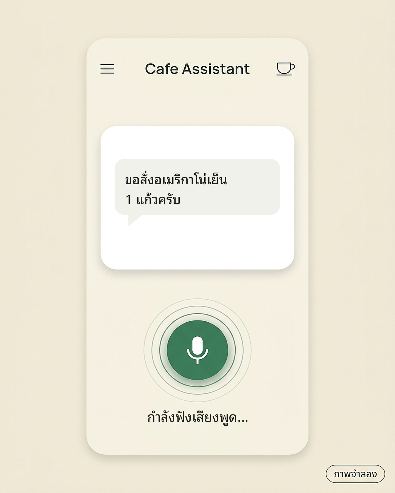
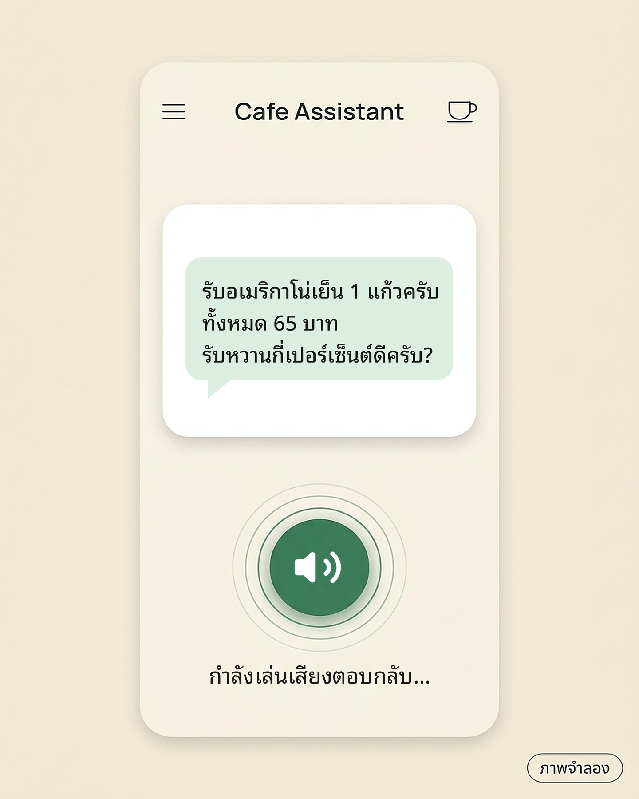

EP04 / VOICE API
ภาพจำลอง
คุยด้วยเสียงในแอปของคุณ
ท่อ 3 สเต็ปฟัง → คิด → พูด
✓เช็กลิสต์ก่อนเริ่มใช้งาน
1ฟังถอดเสียงเป็นข้อความ
2คิดตอบแบบภาษาพูด
3พูดอ่านคำตอบออกเสียง
1 ฟัง2 คิด3 พูด


order.wav · เสียงจากไมค์
POSTสิทธิ์ voice:invoke
/api/v1/agents/{id}/voice/transcribe
Authorization: Bearer $LM_TOKEN
-F audio=@order.wav;type=audio/wav
-F language=th
ไฟล์ไม่เกิน 4 MB · wav, mp3, webm, ogg, m4a
{ "text": "ขอสั่งอเมริกาโน่เย็น 1 แก้วครับ" }
“ขอสั่งอเมริกาโน่เย็น 1 แก้วครับ”
POSTสิทธิ์ chat:invoke
/api/chat/message/blocking
"agent_id": "01J8...",
"query": "ขอสั่งอเมริกาโน่เย็น 1 แก้วครับ",
"input_mode": "voice",
"conversation_id": null
Agent ใช้การตั้งค่า “ตอบแบบภาษาพูด” ที่เปิดไว้
{ "answer": "รับอเมริกาโน่เย็น 1 แก้วครับ
ทั้งหมด 65 บาท
รับหวานกี่เปอร์เซ็นต์ดีครับ?",
ทั้งหมด 65 บาท
รับหวานกี่เปอร์เซ็นต์ดีครับ?",
"conversation_id": "c_7Q2…" }
คำตอบตัวอย่าง (ภาพจำลอง)“รับอเมริกาโน่เย็น 1 แก้วครับ ทั้งหมด…”
POSTสิทธิ์ voice:invoke
/api/v1/agents/{id}/voice/speech
"text": "รับอเมริกาโน่เย็น 1 แก้วครับ…",
"format": "auto"
ข้อความไม่เกิน 4,000 ตัวอักษรต่อครั้ง
audio/mpeg หรือ audio/wav
✕ไม่ต้องเทรนโมเดลเสียงเอง
1
ฟัง เสียง → ข้อความ
Voice API ·
voice/transcribe2
คิด ข้อความ → คำตอบ
Chat API ของ Agent
chat/message/blocking3
พูด คำตอบ → เสียง
Voice API ·
voice/speechเปิด “สนทนาด้วยเสียง” + publish
ไม่เปิด = 403 VOICE_DISABLED
แก้แล้วไม่ publish = ยังไม่มีผล
แก้แล้วไม่ publish = ยังไม่มีผล
สิทธิ์
voice:invoke + chat:invokevoice = ถอด/อ่านเสียง · chat = ถาม Agent
เก็บ API Key ฝั่ง server
แอปมือถือเรียกผ่าน backend ของคุณ
ไม่ฝัง Key ไว้ในแอป
ไม่ฝัง Key ไว้ในแอป

เบื้องหลังเชื่อมต่ออย่างไร?
แอป → ? → คำตอบเป็นเสียง
แอป → ? → คำตอบเป็นเสียง

ปรับเสียงได้ ด้วย voice, speed
ไม่ส่ง = ใช้ค่าเสียงของ Agent ที่ publish
ไม่ส่ง = ใช้ค่าเสียงของ Agent ที่ publish

เรียกจาก server ของแอป
API Key ไม่ใส่ในแอปมือถือ
API Key ไม่ใส่ในแอปมือถือ
เคยไหม ผู้ใช้พิมพ์ไม่สะดวก
เช่น กำลังขับรถ หรือมือไม่ว่าง
เช่น กำลังขับรถ หรือมือไม่ว่าง
ถ้าแอปคุยด้วยเสียงได้
ก็จะใช้งานง่ายขึ้นมาก
ก็จะใช้งานง่ายขึ้นมาก
แต่เบื้องหลัง ต้องเชื่อมต่อระบบอย่างไร?
ไม่ต้องสร้างหรือเทรนโมเดลเสียงเองตั้งแต่ต้น
LangMind มี Voice API ถอดเสียง/อ่านออกเสียง
ใช้คู่กับ Chat API ของ Agent
ใช้คู่กับ Chat API ของ Agent
ต่อกันเป็นท่อ 3 สเต็ป
ฟัง → คิด → พูด
ฟัง → คิด → พูด
สเต็ปแรกคือการฟัง ผู้ใช้กดไมค์แล้วพูดว่า
“ขอสั่งอเมริกาโน่เย็น 1 แก้วครับ”
“ขอสั่งอเมริกาโน่เย็น 1 แก้วครับ”
ระบบหลังบ้านของแอปส่งไฟล์เสียง (ไม่เกิน 4 MB)
ไปที่ Voice Transcribe ของ LangMind
ไปที่ Voice Transcribe ของ LangMind
แล้วได้ข้อความที่ถอดจากเสียงกลับมา
สเต็ปที่สองคือการคิด ส่งข้อความเข้า Chat API
พร้อมระบุ input_mode เป็น voice
พร้อมระบุ input_mode เป็น voice
Agent ที่ใส่ข้อมูลเมนูร้านไว้
จะตอบสั้น กระชับ เป็นภาษาพูด
จะตอบสั้น กระชับ เป็นภาษาพูด
และส่ง conversation_id กลับมา
ไว้ใช้คุยต่อในรอบถัดไป
ไว้ใช้คุยต่อในรอบถัดไป
สเต็ปสุดท้ายคือการพูด
ส่งคำตอบเข้า Voice Speech ของ LangMind
ส่งคำตอบเข้า Voice Speech ของ LangMind
ได้ไฟล์เสียงกลับมา
เป็น MP3 หรือ WAV ตามที่ตั้งค่าไว้
เป็น MP3 หรือ WAV ตามที่ตั้งค่าไว้
แล้วแอปก็เปิดเสียงนั้นให้ผู้ใช้ฟัง
สรุป 3 สิ่งที่ต้องเตรียม
1. เปิดสนทนาด้วยเสียงใน Agent แล้ว publish
1. เปิดสนทนาด้วยเสียงใน Agent แล้ว publish
2. API Key ต้องมีสิทธิ์
voice:invoke และ chat:invoke
voice:invoke และ chat:invoke
3. เก็บ API Key ไว้ที่ server ของแอปเท่านั้น
เพียงเท่านี้ แอปของคุณ
ก็พร้อมคุยกับผู้ใช้ด้วยเสียงแล้วครับ
ก็พร้อมคุยกับผู้ใช้ด้วยเสียงแล้วครับ